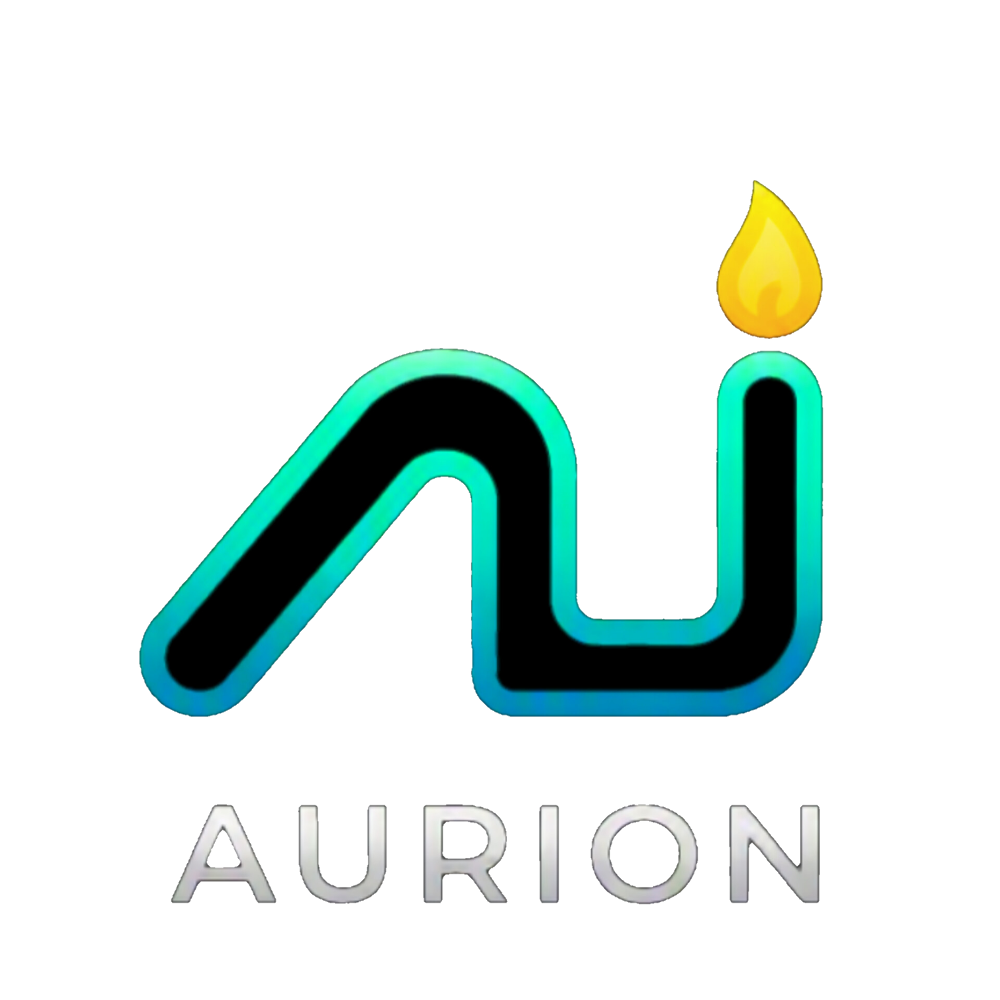

An intelligent live execution desk for MetaTrader 5 — prop-firm risk rules enforced before every order, an AI read scored against the strategy, the slower chart and the market regime, and a charting terminal built for the job.
The chart below is the desk's own charting engine running here in your browser on generated candles, and the theme buttons drive the real theme layer. Trading needs the Windows application: the engine, MetaTrader 5 and your own account never leave your machine, and nothing on this page connects to a broker.
Drawing rail, object manager, indicators, and free navigation — scroll to zoom, drag to pan, right-drag to move it anywhere, ctrl with the right button to stretch the price scale. Everything works here exactly as it does in the desk.
Each one changes the material the desk is made of — surface opacity, blur, shadow, corner radius, motion — and brings its own backdrop. Try them; the chart above follows.
Daily loss, drawdown, position caps and session windows are checked before an order is sent, not reported afterwards.
The AI read, its measured out-of-sample edge, the strategy's own confidence, the market regime and the slower chart are blended into one number that decides whether to trade, how many tickets, and how large.
Four built in, and your own Python uploaded from the desk. Each keeps its own ledger of wins, losses and profit factor.
Pair your own chat with a code. Only the accounts you attach receive anything, and only from your installation.
The window checks for Python, Node and WebView2 before it starts and offers to fetch what is missing, from the vendors themselves, with nothing unsigned ever run.
A per-user MSI. The desk is a local web app in a native window; your credentials and your models stay on your disk.